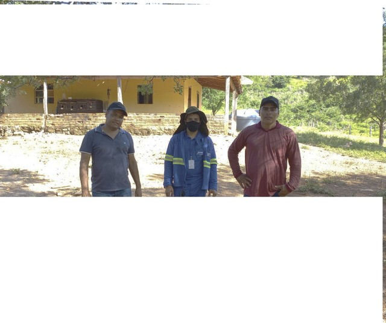

Últimas Notícias
Rio TV Câmara prepara programação especial no Dia do Samba
A relação entre a cidade do Rio de Janeiro e o samba é antiga. Primeira música gravada como “samba”, em 1916, “Pelo Telefone” descreve o cotidiano da cidade...
Agora é Lei: Idosos terão intérpretes de Libras em instituições
A Câmara do Rio promulgou, nesta sexta-feira (29/11), a Lei 8.693/2024, que determina às Instituições de Longa Permanência e Casas de Convivência e Lazer para Idosos...
Câmara do Rio recebe auditoria do Instituto Lixo Zero
As instalações administradas pela Câmara do Rio receberam, nesta sexta-feira (29/11), uma auditoria do Instituto Lixo Zero (ILZB), empresa responsável por constatar os requisitos...